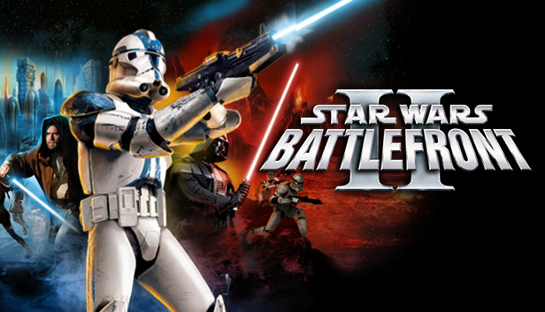

Interests
I have been playing soccer since I was 4 years old. For the next 14 years, I played organized soccer year round, only stopping,
after graduation. During high school I played for my high school team in the summer and fall and
with my club team in the winter and spring. I have always enjoyed playing defense, especially center back, as that is where I
am most comfortable on the field. Now I still enjoy playing pickup games with my friends or playing intramurally. My first job was
as an indoor soccer referee, and I have since reffed on campus at Notre Dame as well to make some extra money. In addition to playing soccer
I love to watch professional soccer as well. My favorite club is the English club Liverpool FC. I have been lucky enough to see Liverpool play
two matches in person, one at Notre Dame. I also love playing the latest iteration of the FIFA video game series as well, although I
do not play as much since starting college because I have less time.


Growing up, playing video games, especially with my friends, was one of my favorite things to do. My favorite video game growing up
was Star Wars: Battlefront 2 (2005). I still play it very sometimes but not regularly. I also had a Nintendo Wii growing up,
and would always play with my best friends. Since starting college, I have less time for gaming. Despite this I still try to play whenever I get
the time to. The main games I play currently are story games, shooters, FIFA, and the most recent F1 game.